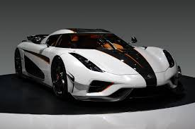
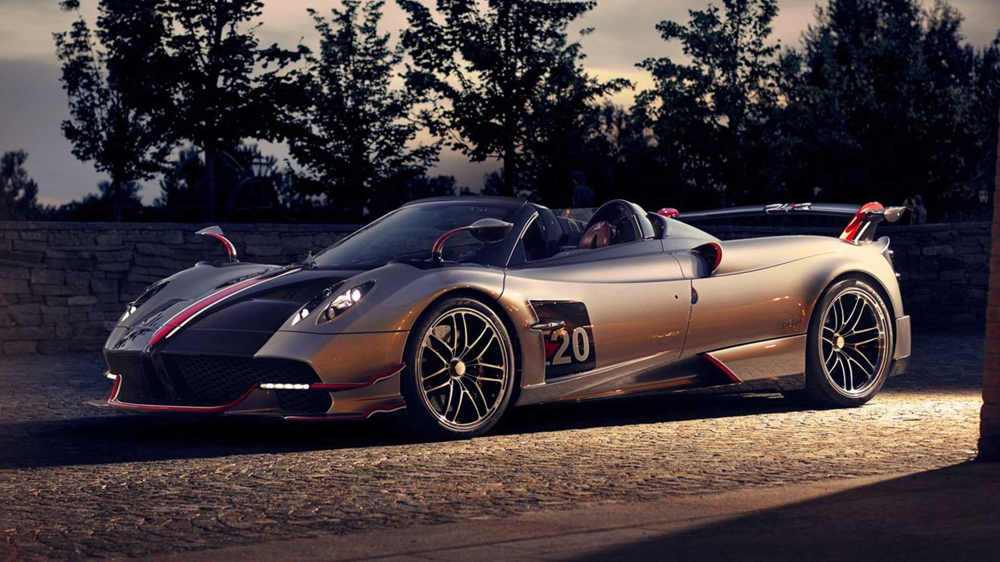
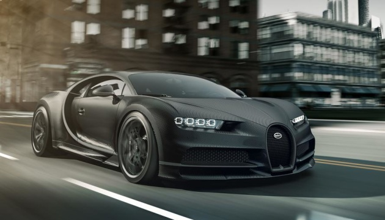
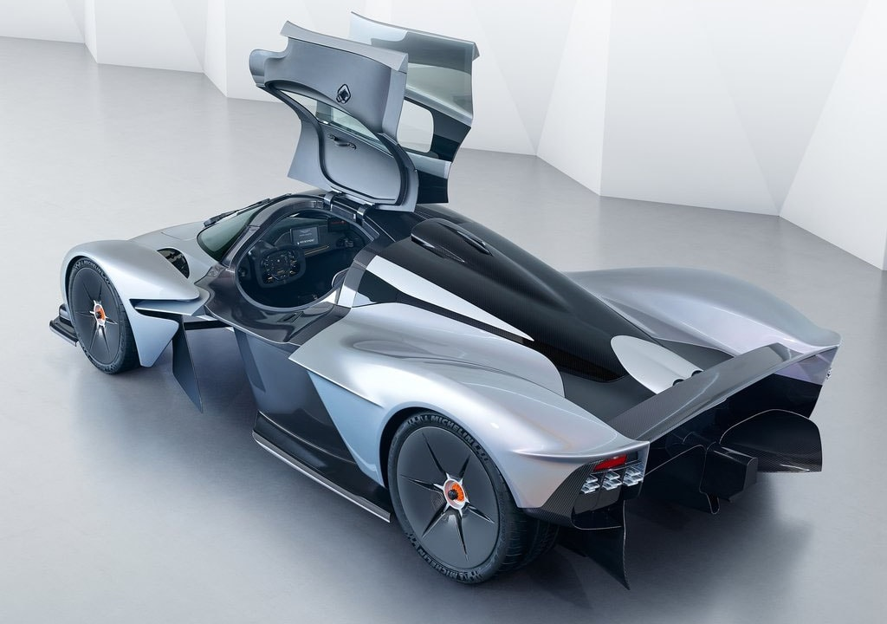
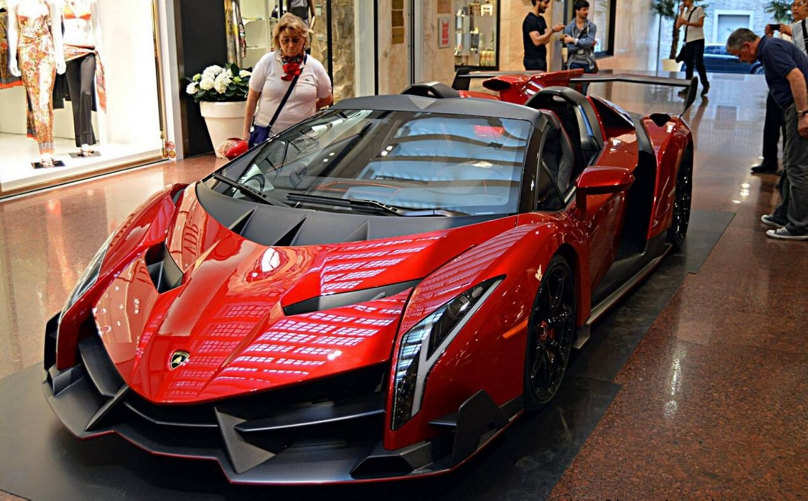

- Koenigsegg Regera
- Pagani Huayra Roadster
- Bugatti Chiron
- Aston Martin Valkyrie
- Lamborghini Veneno Roadster
Эти пять самых дорогих автомобилей мира мы вряд ли увидим на наших дорогах, ведь их создают крайне ограниченным тиражом. Они – настоящие произведения искусств, обладающие непревзойденными техническими характеристиками, ультрасовременным дизайном и роскошными салонами. Иногда их даже не эксплуатируют, как автомобили, а держат, словно дорогих маститых скакунов, в охраняемых гаражах.
5 место – Koenigsegg Regera
Этот суперкар создал небольшой шведский производитель мало известный у нас в стране и специализирующийся на выпуске эксклюзивных спортивных авто – компания Koenigsegg Automotive AB. Свое элегантное заднеприводное «космическое чудо», создаваемое исключительно вручную, шведы наделили 1590-килограммовой массой, углепластиковым кузовом, максимальной скоростью 410 км/ч, и разгоном до 100 км/ч за 2,7 секунды.
4 место – Pagani Huayra Roadster
Великолепный и потрясающий, блистательный и не знающий себе равных – какими только эпитетами не наделяют этот итальянский спортивный автомобиль с необузданным нравом и ценником в $2,3 млн. «Упакованный» в карбоно-титановый монокок, оснащенный 760-сильным «мерсовским» двигателем, связанным с 7-ступенчатой коробкой передач, этот гиперкар, похожий на глубоководную хищную рыбу, обещает своему владельцу непередаваемые ощущения во время езды.
3 место – Bugatti Chiron
Добротный, как выдержанный односолодовый виски, и мускулистый, словно крылатый кентавр, Bugatti Chiron – это настоящий шедевр автомобильного искусства с 1500- сильным 8-литровым «сердцем», 2,5-секундным рывком с места до 100 км/ч и умением разгоняться до 460 км/ч. Но, за такое сочетание силы, функциональности и изысканного комфорта приходится платить: в городе автомобиль потребляет 35,2 л/100 км, а только комплект шин Michelin на него обойдется в $42000.
2 место – Aston Martin Valkyrie
Этот особенный автомобиль, получивший имя скандинавской девы-воительницы Валькирии, говорят, обладает и силой богов. У него абсолютно уникальная внешность – агрессивное, будто напружинившееся перед прыжком тело хищной кошки. Создатели полностью избавили машину от стальных деталей, выполнив кузов полностью из углепластика и сделав суперлегким – вес автомобиля составляет 1030 кг, а соотношение мощности к массе – 1:1.
1 место – Lamborghini Veneno Roadster
Признанный король современных дорог, пока никем не превзойденный гоночный болид Lamborghini Veneno Roadster занимает первое место среди самых дорогих автомобилей на сегодняшний. По мнению экспертов, эта машина – обладатель лучшей аэродинамики, стабильности и управляемости в мире. С кузовом, полностью выполненным из углепластика, без крыши и с креслами, обтянутыми специальным материалом под названием CarbonSkin, он, красив, как породистый мустанг и динамичен, словно ракета.
